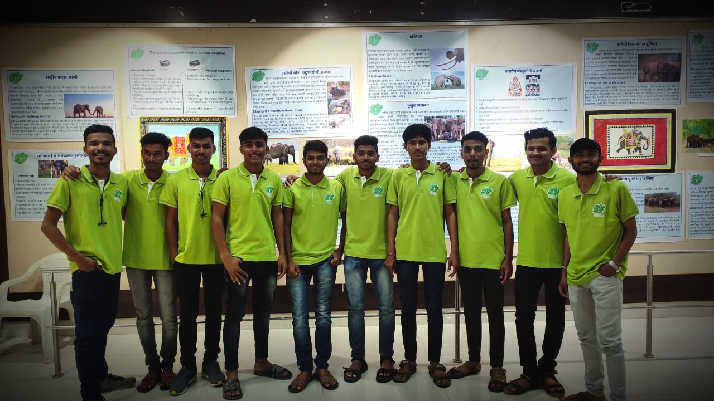

Each student in the committee has to pay for the organization for half an hour ( four hours ) work per week. It
has a look like cleaning, office, work in the restaurant. It strengthens the awareness of labor culture. This
work records are kept. He is given a range.

Student Work Under Earn-Learn Scheme At Balgandharv, Pune.
• Earn and learn plan
The plan is mandatory to earn and learn for self-reliance and interpretation in the committee. Working in this
plan
Labor culture comes to mind and realizes the value of money, gets conversation skills, work responsibility,
self-reliance, informal learning of the transaction. Working at least one to two hours a day helps them cover
the month's cost and reduce the financial stress on parents.
• Earn and learn
The nature of the work
Tell him to work, realizing that we are the parents of the student ourselves. Knowing that he has a share in
his education without understanding the student's job, he should be given proper instructions and guidance
on it if there is any mistake and abuse from him.
The Committee wishes that the experience and rites we have gained while working should benefit the student
in his next life, you should be involved in being a competent.
Students can do the following kind of work in this plan.
Office Assistance
Author
Data Entry ( Computer )
Computer Works
Banks Works
Teaching
Receptionis
Newspaper, Reading books
Warranty
Home Work Assistance
Gardening
Work in Plantation Campaign of Environmental Institutions Regular form of works while allocating
leaflets in seasonal works, Event management, postpartisan inspections include works. Earn Learn
work hours are ⇢ to ⇢ hours a week, depending on the convenience of one or two hours a day.
Please explain the information about the work, work from them at the beginning.
Give a day off a week. Possibly on Sundays or at the convenience of both
Money in any way other than compensation ( Us / Lift etc ) should not be paid to the student.
The student should not be called to work longer than the time fixed or at other times. Because it is likely
to affect their studies.
If the student is assisted as an incentive for good work or increased the risk of compensation, his written
notice should be given to the office of the committee.
Work is likely to fall during the day or summer vacation period and during the student examination period.
If you want to discuss the work of students, Monday to Friday from 11 a.m. to Sion. ⇢ should be met directly
in the office or contacted by telephone if possible at this time.
Students visit their home once a month to the fund's donor in the parenting plan. He had discussions about student
education, family status, sometimes giving guidance to the student. It helps the student progress. Possibly
according to the educational, professional experience of the aid donors, the students of that branch are sent for a
visit. A rural house is connected to an urban house.